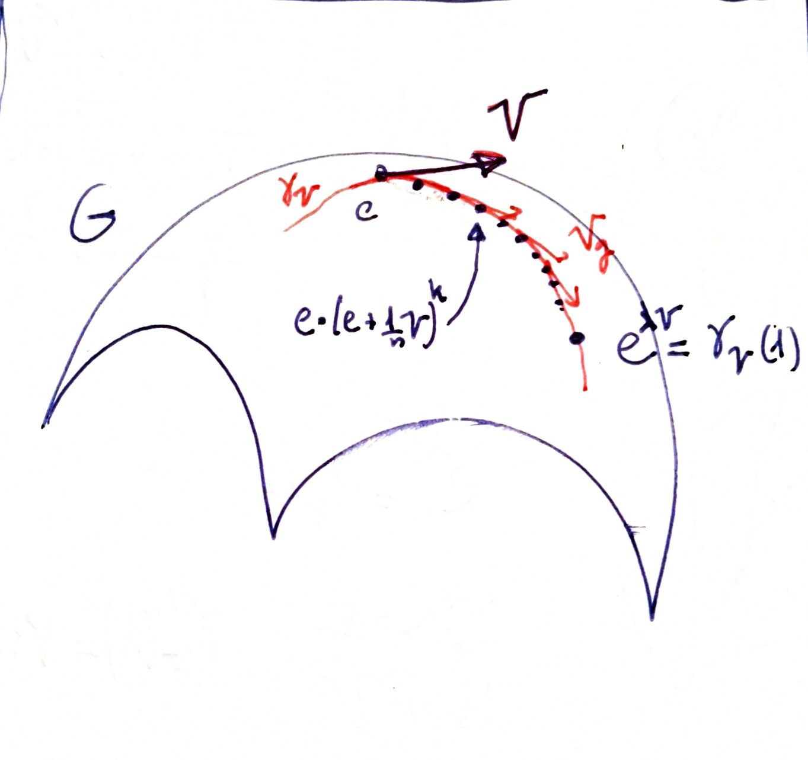

Exponential map
Motivation (old version, delete?)
Let $G$ be a group acting over a manifold $X$. Let $V \in T_e G$ and $n\in \mathbb{N}$. Then, since $e+\frac{1}{n} V \notin G$, for $p \in X$ we can not define:
$$ q=p \cdot (e+\frac{1}{n} V) $$But if we take $n$ big enough we can take a blind eye. Let's apply such transformation several times, say $\lambda\cdot n$ times, to get a new transformation.
$$ q=p \cdot (e+\frac{1}{n} V)\cdot (e+\frac{1}{n} V)\cdot (e+\frac{1}{n} V)\cdot \ldots=p\cdot (e+\frac{1}{n} V)^{\lambda\cdot n} $$
As we has said, this is not actually defined. But if we take limit in the expression above:
$$ q=\lim _{n\rightarrow + \infty} [ p\cdot (e+\frac{1}{n} V)^{\lambda\cdot n}] $$it could be something real.
Because of the form of this expression, we can identify:
$$ q=p\cdot e^{\lambda\cdot V} $$Motivation (new version)
See [Xournal_134].
Given a manifold $M$ we can think of a "procedure" that takes a point $p\in M$, a real number $t\in \mathbb{R}$ and a vector field $X$ on $M$ and returns a new point of $M$, working at this way:
1. we start at $p$ and move a little along $X_p$. That is, we compute $q_1=p+X_p/10$.
2. we move a little from $q_1$ along the direction of $X_{q_1}$, that is, we compute $q_2=q_1+X_{q_2}/10$.
3. We finish after 10 steps.
Of course, we have better precision if we do this in more steps. In the limit (steps $\to \infty$) we would obtain the true output that we will denote by
$$ q=pe^{tX} $$and is nothing but the flow of $X$. See also Lie algebra action.

This is a very general construction. What has to do with the usual exponential and, moreover, with the number $e$?
Suppose the manifold $M=\mathbb{R}$ and the vector field given in the canonical coordinates by $X_x=x$.

Then the number $e$ appears when we move from 1 a time 1 by means of that particular vector field.
Formal definition
But, what is $e^{\lambda\cdot V}$ in reality? (watch out, not to mistake this $e$ with the identity $e\in G$).
Let us observe that, when we consider $G$ acting on itself, every vector $v\in \mathfrak{g}=T_e G$ gives rise to a left invariant vector field $V$ associated to $v$:
$$ V_g=d(L_g)_e(v) $$(it is nothing but the fundamental vector field).
Then, if we consider the flow $\phi_V$ of this vector field on $G$, we have a one-parameter subgroup of $\mbox{Diff}(G)$ (ey, we are assuming that it is a complete vector field. It is proven here. Since $G\subseteq \mbox{Diff}(G)$ we can wonder: is it, in fact, a one-parameter subgroup of $G$? Or in other words, does every diffeomorphism $\phi_V(t,-)$ correspond to left translation by an certain element $g_t \in G$?
The answer is yes. We can take $g_t=\phi_V(t,e)\in G$, and define $\tilde{\phi}(t,m)=m\cdot g_t$. But we can show that
$$ \phi_V=\tilde{\phi} $$because of the uniqueness of the flow, since:
- $\tilde{\phi}(0,m)=m=\phi_V(0,m)$
- $\tilde{\phi}(t,-)$ are integral curves of $V$:
With this set up, the exponential map is defined by
$$ exp(v)=g_1=\phi_V(1,e) $$and is usually also denoted by $e^v$.
Inverse relation with "differentiation"
It is important to note that $\phi_V(t,e)=e^{tv}$. But this is obvious from flow theorem for vector fields#Important property. Indeed
$$ e^{tv}=\phi_{tV}(1,e)=\phi_V(t,e). $$Therefore we have
$$ v=\frac{d}{dt}|_{t=0} e^{tv} $$expression that I like to call inverse relation between exponential and differentiation at the origin. In a sense, is like saying that exponentiation is like an "integration process" (see the picture of the section Motivation).
Now, think of
$$ exp: \mathfrak{g} \mapsto G $$and its differential at $0$
$$ d (exp)_o: T_o \mathfrak{g} \mapsto \mathfrak{g} $$Since this is the identity map, by inverse function theorem $exp$ is a diffeomorphism in a neighbourhood of $0\in \mathfrak{g}$ and $e\in G$, say $U_e$.
Proposition 1.24 in Peter Olver says that any $g\in G$ is product of $g_i\in U_e$. So \textbf{for any $g\in G$}:
$$ g=g_1\cdot g_2\cdot \cdots=exp(v_1)\cdot exp(v_2)\cdot \cdots $$for certain $v_i \in \mathfrak{g}$.
Surjectivity of the exponential map
Proposition
If ${G}$ is a compact connected Lie group, then the exponential map is surjective.
Proof
The proof is not trivial. Ver aquí:
https://terrytao.wordpress.com/2011/06/25/two-small-facts-about-lie-groups/
Author: Antonio J. Pan-Collantes
INDEX: